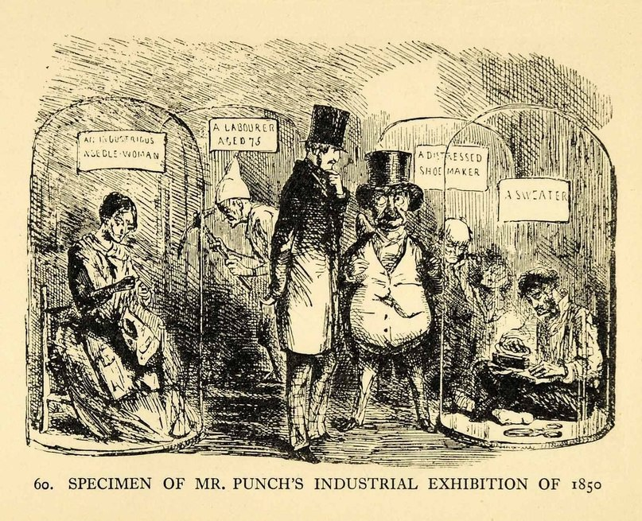

Как известно, в капиталистическом обществе прибавочный труд изымается у пролетариата в форме прибавочной стоимости. Принцип этого акта легче всего понять, изучив историю экспроприации производителя. Обратимся к английской истории, к тому её периоду, когда огромные массы мужчин, женщин и детей внезапно были силой отлучены от их средств производства и отправлены на рынок труда в качестве рабочей силы. В основе этого процесса лежала экспроприация земли у крестьян.
К концу XIV века в Англии практически не осталось крепостных. Подавляющее большинство населения составляли т.н. «свободные» крестьяне. В отличие от более ранних времен, эти крестьяне относительно немного работали на феодалов, вместо этого трудясь на земле, которая находилась у них в общинной или частной собственности. Хотя кое-где и оставались громадные угодья феодалов, однако гораздо более типичными были небольшие крестьянские наделы. Жестокая экспроприация этих небольших участков и их собственников прошла в несколько этапов, что привело к формированию «неимущего пролетариата». Первый шаг к этому сделала монархия. Желая усилить королевскую власть и ослабить феодалов, монарх распорядился разогнать группы слуг, которые окружали дворянство. Эти слуги стали первыми кого в значительном количестве выгнали на ранний рынок рабочей силы. «Вы ведь на побегушках, вот и бегите!»
Демонстративно выступив против этого, крупные феодалы создали несравнимо больший по численности пролетариат, силой отбирая у крестьян наделы, в отчаянной попытке усилить аристократическую власть. Прямой импульс процессу экспроприаций дал быстрый рост шерстяных мануфактур во Фландрии и рост цен на шерсть. В погоне с деньгами, этой высшей силой, дворянство решило превратить фермерские наделы в пастбища для овец. Для этого при помощи военной силы крестьяне были жестоко изгнаны с их земли, разграблены и разорены огромное количество деревень.
Указ времен Генриха VIII свидетельствует о последовавшем за этим переходе контроля над средствами производства из одних рук в другие.
«В это время (1489 г.) умножились жалобы на превращение пахотных земель в пастбища (для овец и т. д.), требующие лишь присмотра немногих пастухов; земли, сдаваемые в аренду, пожизненную или погодовую (погодовой арендой жила значительная часть йоменов) были превращены в крупные имения. Это привело к упадку народа, а, следовательно, к упадку городов, церквей, десятин… Король и парламент с мудростью, достойной изумления, старались излечить это зло… Они приняли меры против истребляющей население узурпации общинных земель (depopulating inclosures) и против истребляющего население пастбищного хозяйства (depopulating pasturage), по пятам следующего за этой узурпацией».
«Акт Генриха VII, 1489 г., гл. 19, воспрещает сносить крестьянские дома, к которым принадлежит не менее 20 акров земли. Акт, изданный в 25-й год царствования Генриха VIII, возобновляет этот закон. Там говорится, между прочим, что «значительное число арендных земель и большие стада скота, в особенности овец, скопляются в немногих руках, вследствие чего земельные ренты очень возросли, а обработка пашни (tillage) пришла в большой упадок, церкви и дома снесены и поразительно громадные массы людей лишились возможности содержать себя и свои семьи». – Карл Маркс «Капитал». Том 1; глава 24.
Министр Генриха VIII – Томас Мор в своей книге «Утопия» (1516), описал удивительную страну, где «овцы пожирают людей целиком». Как заметил английский философ и государственный деятель – Фрэнсис Бэкон, это ведет к падению людей, городов, церквей и всего остального. Некогда владевшие несколькими акрами земли крестьяне, теперь стали практически безземельными. И по сей день типичному работнику не всегда удается разбить хотя бы крошечный сад.
В 16 веке процесс экспроприации получил новый импульс: кража государственных земель во время «Славной революции» 1688 года. «Славная революция» (англ. Glorious Revolution) – принятое в историографии название государственного переворота 1688 года в Англии, в результате которого был свергнут король Яков II Стюарт. В перевороте участвовал голландский экспедиционный корпус под командованием правителя Нидерландов Вильгельма Оранского, который стал новым королём Англии под именем Вильгельма III (в совместном правлении со своей женой Марией II Стюарт, дочерью Якова II). Переворот получил широкую поддержку среди самых разных слоёв английского общества. Также это сопровождалось кражей земель католической церкви во время протестантской Реформации. В итоге посредством жестоких действий, земли Англии превратились из общинных владений и небольших наделов, в гигантские угодья частных предприятий. Тем временем количество обезземеленным, лишенных собственности и всяческих прав крестьян, побила все рекорды. «Куда не глянь – повсюду нищие!» – так королева Елизавета I сказала после поездки по Англии. Вскоре ей пришлось официально признать нищету и ввести налог в пользу бедных. Но власть предержащие в целом не проявляли никакой доброты по отношению к несчастному крестьянству. Как раз наоборот – этих, и без того истерзанных людей, подвергли новому насилию, чтобы превратить их в пассивный и покорный рабочий класс, чтобы натаскать их для жизни в промышленном строе, чтобы сломать их самих и их непокорный дух.
Развивающаяся промышленность могла принять на работу далеко не всех сорванных с места экспроприацией крестьян. Лишенные возможности продолжать привычную жизнь, практически не имея шанса устроиться на работу по найму, многие из этих несчастных превратились в попрошаек, грабителей и бродяг. Государство быстро показало всё свое «сострадание» к обедневшим крестьянам, приняв драконовские законы, в соответствии с которыми бродяги и попрошайки приравнивались к преступникам. В частности:
в 1530 году, при Генрихе VIII, бродяги за первое нарушение приговаривались к порке кнутом, за второе – лишались уха, а за третье их казнили, и при этом им никто не предлагал помощь в поиске работы;
в 1547 году, при Эдуарде VI, любой человек отказывающийся работать – не важно, где и с какими средствами производства, – объявлялся рабом;
в 1572 году, при Елизавете I, незарегистрированные попрошайки 14 лет и старше, приговаривались к порке и их клеймили. За второе нарушение следовала смертная казнь.
Так было экспроприировано крестьянство Англии. Крестьян выгнали из домов, превратили в бродяг, а затем стали сечь, клеймить и истязать по преувеличенно жестоким законам, чтобы привить им дисциплину, необходимую для системы наемного труда. После этого деньги наконец-то получили возможность функционировать в качестве капитала, посредством покупки огромного количества рабочей силы для работы мануфактур, а затем и промышленного производства. Ткацкие станки и другие средства производства, некогда рассеянные по деревням, теперь оказались собраны вместе на примитивных фабриках. Всюду проникала торговля, подпитываемая зарождающейся «промышленной революцией». Комбинация концентрированных средств производства и наемной рабочей силы стала невероятно динамичной.
«Открытие золота и серебра в Америке, истребление, порабощение и погребение в рудниках её коренного населения, начало завоевания и ограбления Ост-Индии, превращение Африки в угодья для охоты на чернокожих – всё это возвестило о восхождении румяной зари эпохи капиталистического производства. Эти идиллические деяния – ключевой момент процесса первоначального накопления. За ними по пятам следует торговая война европейских наций, театром которой стал весь мир». – Карл Маркс «Капитал». Том 1.
Джон Булль (собирательный образ англичанина) обогнул весь мир, чтобы найти землю для захвата. Он украл пару островов на западе и назвал их своей Вест-Индией. Сначала, капитал мог поглотить только часть избыточного населения, сорванного земли, вследствие чего оставались толпы безработных, попрошаек и бродяг. Но постепенно капиталистическое производство набирало обороты. Шли годы, века и в конце концов подавляющее большинство населения Англии превратилось в пролетариев. То же самое произошло и в остальном мире. Жестокие методы и суровые законы, посредством которых безземельное население изначально приучали к трудовой дисциплине, теряли свою необходимость по мере того, как капиталистическое производство стабилизировалось, становясь «обычной» формой производства.
«Теперь молчаливое принуждение экономических связей санкционирует превосходство капиталиста над работником. Само собой, прямая экстраэкономическая сила до сих пор находит применение, но только в крайних случаях. В обычных обстоятельствах рабочих вполне можно оставить на милость производственных отношений – они все равно будут бояться потерять работу и оказаться в голоде и нужде…»
Так как рабочие не обладают средствами производства, у них нет иного выбора, кроме как «свободно» продавать свою рабочую силу. Именно таким образом, пролетариат становится ведущим актером на экономической сцене.
Ситуацию неплохо демонстрирует старый английский журнал «Панч»:

На карикатуре продемонстрированы «экспонаты, не попавшие на всемирную выставку». А позади мы можем увидеть в виде «экспонатов» обычных пролетариев: швею, 75-летнего работника, бедного сапожника и портного.
Пролетарии отличаются от явных несвободных работников, вроде рабов или крепостных, двумя вещами. Заглянем в «Принципы коммунизма» Фридриха Энгельса:
«7-й вопрос: Чем отличается пролетарий от раба?
Ответ: Раб продан раз и навсегда, пролетарий должен сам продавать себя ежедневно и ежечасно. Каждый отдельный раб является собственностью определенного господина, и, уже вследствие заинтересованности последнего, существование раба обеспечено, как бы жалко оно ни было. Отдельный же пролетарий является, так сказать, собственностью всего класса буржуазии. Его труд покупается только тогда, когда кто-нибудь в этом нуждается, и поэтому его существование не обеспечено. Существование это обеспечено только классу пролетариев в целом. Раб стоит вне конкуренции, пролетарий находится в условиях конкуренции и ощущает на себе все её колебания. Раб считается вещью, а не членом гражданского общества. Пролетарий признается личностью, членом гражданского общества. Следовательно, раб может иметь более сносное существование, чем пролетарий, но пролетарий принадлежит к обществу, стоящему на более высокой ступени развития, и сам стоит на более высокой ступени, чем раб. Раб освобождает себя тем, что из всех отношений частной собственности уничтожает одно только отношение рабства и благодаря этому тогда только становится пролетарием; пролетарий же может освободить себя, только уничтожив частную собственность вообще.
8-й вопрос: Чем отличается пролетарий от крепостного?
Ответ: Во владении и пользовании крепостного находится орудие производства, клочок земли, и за это он отдает часть своего дохода или выполняет ряд работ. Пролетарий же работает орудиями производства, принадлежащими другому, и производит работу в пользу этого другого, получая взамен часть дохода. Крепостной отдает, пролетарию дают. Существование крепостного обеспечено, существование пролетария не обеспечено. Крепостной стоит вне конкуренции, пролетарий находится в условиях конкуренции. Крепостной освобождает себя либо тем, что убегает в город и становится там ремесленником, либо тем, что доставляет своему помещику вместо работы или продуктов деньги, становясь свободным арендатором, либо тем, что он прогоняет своего феодала, сам становясь собственником. Словом, он освобождает себя тем, что так или иначе входит в ряды класса, владеющего собственностью, и вступает в 326 сферу конкуренции. Пролетарий же освобождает себя тем, что уничтожает конкуренцию, частную собственность и все классовые различия».
Подведём итог: в отличие от рабов, пролетариат «волен» продавать свою рабочую силу; в отличие от крепостных, пролетариат «свободен» от земли и других средств производства. Такова двойственная основа хваленой «свободы» буржуазного общества. Свобода голодать? Конечно, каждый имеет на это право!
Теоретик политического либерализма Иеремия Бентам радостно замечал, что рабочие наслаждаются «свободой», «равенством» и «правом». «Свободой», так как и покупатели, и продавцы вольны заключать сделки с другими. «Равенством», так как покупатели и продавцы взаимодействуют в качестве собственников простых товаров, обменивая эквивалентные вещи. «Собственностью», так как покупатели и продавцы живут, обмениваясь тем, чем они владеют. Но, покидая сферу обмена и входя в тайную обитель производства, на пороге которой висит табличка «вход только по делу», главные герои начинают вести себя несколько иначе. Собственник денег теперь выходит на первый план как капиталист. Собственник рабочей силы следует за ним в качестве его работника. Первый самодовольно ухмыляется и думает только о деле, а второй же, наполнен покорностью и страхом. Здесь мы говорим об отчуждении труда – о подчинении работника чуждой власти. Будучи прямым следствием продажи рабочей силы, зависимое положение работника, является неотъемлемой чертой статуса рабочей силы в качестве товара. Заключая в себе ложную свободу («свободу» вступать в подчиненную роль), отчуждение труда представляет собой жизненно важную предпосылку для его эксплуатации.
Свобода работника – вещь любопытная. В целом очевидно, что работник, будучи участником товарообмена, свободен делать только одно: продавать время и энергию за заработную плату. Есть разные начальники и разные рабочие места, но при всем при этом, работники могут не вступать с ними во взаимодействие, только если им не нужно «зарабатывать на жизнь». Все знают, что существует только два типа работников: работающие и безработные. Продавая рабочую силу, работники теряют контроль над тем, что они делают сами. Что производится и как? В чем цели и способы труда? На эти вопросы может ответить только капиталист. А итог труда – сам продукт, без сомнения, принадлежит не производителю, а капиталисту.
Чем заниматься работнику, определяет чужая воля, которую заботят не работники, а прибыль. Мотивы рабочих на производстве не берутся в расчет, их вытесняет мотив получения прибыли. Толстосум строго наставляет работника: «Просто делай, что сказали! Тебя для этого и наняли! За рассуждения тебе платить не будут! В свободное время занимайся, чем хочешь, но здесь делает то, что я говорю! Не твоё дело, что ты производишь. Если тебе не нравится производить нервно-паралитический глаз, нейтронные бомбы, дефектные автомобили, электрические стулья или напичканную химией еду, ищи работу в другом месте. Ясно тебе?». Работников не спрашивают, что производить и зачем. «Инвестиционные решения» – как и зачем использовать рабочую силу и средства производства, производить, к примеру, ядерное оружие или конфеты – принимает исключительно капитал. «Усердно работай, постоянно улыбайся и следи за собой, НЕ жалуйся, НЕ проявляй инициативу, НЕ в называй свою душу своей». Продавая рабочую силу, что только в формально считается актом доброй воли, работник лишается контроля над трудом. Таким образом, труд, использование рабочей силы, отчуждается, как в целом отчуждается и использование товаров. Разница в том, что однажды проданную рабочую силу уже нельзя вернуть себе. Хотя полезность хлеба и подавляется, пока он ожидает продажи, но, по крайней мере, хлеб может быть съеден, когда продажа произошла. Использование рабочей силы, напротив, в самой полной степени отчуждается после ее продажи.
Несмотря на то, что рабочий класс может разными способами противостоять тирании капиталистов, этот протест организуется на свой страх и риск. Работников можно уволить. Капиталист может перестать покупать рабочую силу. В таком случае работник окажется отрезанным не только от средств производства, но и от средств к существованию. Хотя противостояние, само собой, возможно и необходимо, суть от этого не меняется: быть рабочим – значит, быть зависимым от капиталиста. И закон на стороне толстосума. Как никак, он ведь покупает у вас рабочую силу? Значит, она принадлежит ему, поэтому, он может распоряжаться ею по собственному усмотрению. Если у вас есть возражения, обратись в полицию или в суд. Вы быстро выясните, что использование рабочей силы принадлежит лишь одному полноправному, законному владельцу – капиталисту.